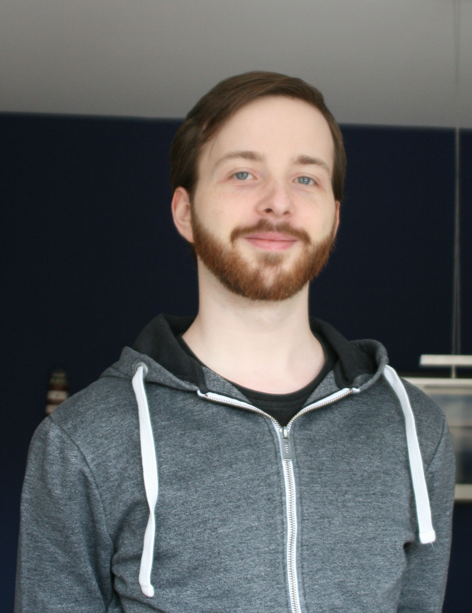

Please contact us if you are interested in joining the lab.


Markus is group leader in the Institute for Plant Sciences at the University of Cologne read more

Akanksha studies the introduction history of grain amaranth to India
and the sources of adaptive alleles.

Corbinian is a PhD student studying the genetic landscape of grain
amaranth and how it changed during the repeated domestication.

José is a PhD student studying gene flow between grain amaranth
species and their wild relatives to reconstruct the domestication
history of the crop.

Kerstin is a PhD student and part of the CEPLAS graduate school.
Kerstin employs ancestral recombination graphs to study the evolution of
maize

Susanne is a PhD student and part of the CEPLAS graduate school in
collaboration with the Hensel
lab at HHU. Susanne advances various molecular methods for amaranth
and dissects the regulation of seed color adaptation.

Tom is a master student studying the the amaranth transcriptome and
the involvement of transcriptomic changes in metabolic pathways

Roswitha runs the wet lab and does the pipetting magic

Julio is a master student working on the molecular validation of
domestication genes in grain amaranth and the conservation of the MBW
regulation network.
Vivien studies genetic determinants of germination in grain amaranth.

Jan is the seed wizard in the lab.

Emily works on pollen nucleous extraction and cell sorting.
© Markus Stetter 2020 Impressum